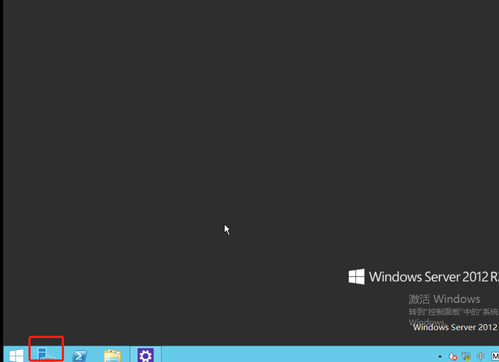

Virtual NAS
亿栖云为您提供的 NAS 服务是基于标准的 NFS 和 Samba（CIFS）网络协议实现的数据传输，通过创建一个 NAS 服务器，您可以在多个云服务器客户端以及不同的操作系统间进行数据共享。同时提供权限组和账号配置功能，便于您对云服务器客户端进行访问控制和管理配置。
在 NAS 服务器上加载硬盘，通过创建共享存储目标与其进行绑定，即可将数据开放给云服务器客户端。一块硬盘只能和一个共享存储目标绑定；如果硬盘上存在多个分区，则无法和共享存储目标进行绑定；建议您使用空白硬盘，在 Virtual NAS 服务器上进行数据文件的共享。
本指南旨在介绍如何配置 Virtual NAS 服务器和共享存储目标，配置云服务器客户端的访问控制，以及设置客户端访问 Virtual NAS 服务。
创建 Virtual NAS 服务器
在本例中，我们会创建一台 Virtual NAS 服务器。
在控制台导航中点击 产品与服务 > 存储服务 > 文件存储 进入列表页面，然后点击『创建』按钮开始创建。
在创建的对话框中，你可以给 NAS 服务器命名，选择服务器类型和配置，并且配置它的网络。你需要将 NAS 服务器放入一个受管私有网络中，并且可以指定 NAS 服务器在私有网络中的 IP。
服务提供两种云服务器类型：性能型和超高性能型：
-
性能型VNAS服务使用的云服务器类型为基础型的云服务器，是面向个人或中小团队用户推出的入门型文件存储服务，为客户提供基于标准的 NFS 和 Samba（CIFS）网络协议访问的文件存储服务。性能型VNAS服务可以使用基础型硬盘，容量型硬盘和企业级分布式SAN硬盘（NeonSAN）。
-
超高性能型VNAS服务使用的云服务器类型为企业型的云服务器，是面向性能要求更高的的企业级客户提供的文件存储服务，可以提供更高的数据处理能力，提供标准的 NFS 和 Samba（CIFS）网络协议访问。超高性能型VNAS服务可以使用SSD企业型硬盘，容量型硬盘和企业级分布式SAN硬盘（NeonSAN）。
需要确保所选私有网络的 DHCP 处于打开状态。

对 NAS 服务器进行关机，或删除操作时，务必在客户端停止对共享存储目标的访问，并执行 umount 操作。
创建共享存储目标
接下来我们要为刚刚创建好的 NAS 服务器添加共享存储目标，目前亿栖云支持基于 NFS 和 Samba（CIFS）两种协议的共享存储目标。
在控制台导航中点击 产品与服务 > 存储服务 > 文件存储 进入列表页面，然后点击之前我们创建的NAS服务器。 进入到 NAS 服务器详细信息后，点击共享存储目标列表下的 创建 按钮。
第一步：创建共享存储目标
在创建对话框中，你可以给共享存储目标定义名称，选择协议类型（NFS 或者 SMB），输入共享存储目录的名称，选择你要加载的硬盘，并为共享存储目标指定权限组。
选择加载的硬盘不能有多个分区，建议用户使用空白硬盘加载（仅支持基础型、容量型和企业级分布式硬盘），已有文件系统硬盘仅支持 Ext4，NTFS，XFS。
NFS 类型的共享存储目标
NFS 协议的共享目录需要填写文件目录的名称，统一以"/mnt/“开头，如”/mnt/shared_dir"

Samba 类型的共享存储目标
Samba 协议的共享目录需要填写目录名称，如"shared_dir"

当需要对共享存储目标进行硬盘修改时，务必在客户端停止对共享目标的访问，并执行 umount 操作。
第二步：应用修改
在完成共享存储目标的创建之后，你需要点击 应用修改 按钮，使得我们创建的共享存储目标应用到共享存储服务器上。
应用修改后，NAS 服务器会检查硬盘是否可用，多个分区和无法识别的文件系统都会导致更新失败。失败的原因会在共享存储目标硬盘栏进行提示。

经过以上步骤后，NAS 共享存储服务端就完成了，可以正常提供服务。
创建账户
在控制台导航中点击 产品与服务 > 存储服务 > 文件存储 进入列表页面，选择 账户 进入账户配置页面。 账户用来配置云服务器客户端的信息，实现对云服务器的访问控制和管理配置。
在创建的对话框中，定义账户的名称，选择账户的类型，对 NFS 和 Samba 我们提供不同的配置选项。
NFS 类型的账户
通过 IP 进行访问控制的（仅支持云服务器 IP 和网段 IP，0.0.0.0代表所有IP地址） 同时 NFS 提供了高级选项，分别针对权限限制和数据读写同步。
用户权限控制：
- 不限制 root 用户权限（no_root_squash）
- 限制 root 用户权限（root_squash ）
- 限制所有用户权限（all_squash）
数据同步类型：
- 同步写入内存和硬盘（sync）
- 先写入内存，后写入硬盘（async）

SMB 类型的账户
通过配置的用户名和密码进行访问控制。

用户可以在创建账号时，选择要加入的权限组，通过权限组将客户端信息同步到想访问的共享存储目标中，完成访问控制的配置。
创建权限组
在控制台导航中点击 产品与服务 > 存储服务 > 文件存储 进入列表页面，选择 权限组 进入权限组配置页面。 在创建权限组对话框中，定义权限组名称，并选择权限组的类型。
NFS 类型的权限组

SMB 类型的权限组

权限组只能和同类型的账户、共享存储目标进行关联。一个权限组可以关联多个共享存储目标，但是一个共享存储目标只能有一个权限组。
进入权限组的详情页面，可看到权限组所绑定的账号，可以在权限组中创建、解绑同类型账号，并修改账号在权限中的读写权限。
账户是全局的，可以绑定到多个权限组。
Virtual NAS 服务器扩容
可以根据您对 NAS 服务器的业务需求，选择对 NAS 服务器进行扩容，以切合您实际的业务需求。
对 NAS 服务器扩容需要先关闭服务器，然后点击右键，选择 更改配置，选择你需要的服务器类型，点击确定，然后启动服务器即可。
当关闭服务器进行扩容时，务必在客户端停止对共享目标的访问，并执行 umount 操作。

Linux 客户端配置及访问
下面我们讲述如何在 Linux 和 Windows 两种操作系统上配置 NFS 和 Samba 客户端来访问 NAS 服务器。
安装客户端软件
NFS 客户端配置
Redhat/Centos: yum install -y nfs-utils
Debian/Ubuntu: apt-get install nfs-common
Samba 客户端配置
Redhat/Centos: yum install -y samba-client
Debian/Ubuntu: apt-get install samba-client
Redhat/Centos: yum install -y cifs-utils
Debian/Ubuntu: apt-get install cifs-utils
客户端连接共享存储目标
通过 mount 操作将共享存储目标绑定到云服务器客户端的指定目录上，就可访问 NAS 服务的共享数据。
通过客户端访问 NAS 服务器，需要在 NAS 服务器上配置好账户和权限组，并绑定到对应的共享存储目标上。
访问 NFS 类型共享存储目标
比如，NAS 服务器地址是 192.168.100.2，共享目录是 /mnt/nas_nfs，客户端目录是 /mnt/nasdata，在云服务器客户端执行：
mkdir /mnt/nasdata
mount -t nfs 192.168.100.2:/mnt/nas /mnt/nasdata
访问 Samba 类型共享存储目标
比如，NAS 服务器地址是 192.168.100.2，共享目录是 nas_smb，客户端目录是 /mnt/nasdata，客户端账户的账户名是 smbtest， 密码是 test123，在云服务器客户端执行：
mkdir /mnt/nasdata
mount -t cifs -o username=smbtest,password=test123 //192.168.100.2/nas_smb /mnt/nasdata
如果要关闭或终止 NAS 服务，以及修改共享存储目标硬盘，需要在客户端停止对共享存储目标的访问，并执行 umount 操作。
客户端断开共享存储目标
umount /mnt/nasdata
Windows 客户端配置及访问
客户端连接共享存储目标
访问 Samba 共享存储目标
1、安装Samba客户端
Win+R 打开“运行”，输入 control，“确定”以打开“控制面板”：
进入 程序→程序和功能，点击“启用或关闭Windows功能”。
或者直接点击左下角的服务器管理器

在服务器管理器中点击添加角色和功能
点击下一步到功能，勾选中SMB 1.0/CIFS File Sharing Suppor
下一步，确认安装并重启服务器。
2、修改本地组策略
重启后再次 Win+R 打开“运行”，输入 gpedit.msc，“确定”以打开“本地组策略编辑器”。
或者直接在搜索框中，输入 gpedit.msc，“确定”以打开“本地组策略编辑器”。
按 计算机配置→管理模板→网络 的顺序，依次展开左侧目录树。
点击“Lanman工作站”，右侧会显示该项目的详细设置。
未找到Lanman工作站，可忽略该步骤
点击里面的“启用不安全的来宾登录”，将它由“未配置”改为“已启用”，应用并重启电脑。
3、访问Samba共享目录
输入对应的samba服务器地址
输入前面设置的账号和密码

此时就可以看见Samba成功映射到了Win系统中
访问 NFS 共享存储目标
仅 Windows 7 的旗舰版和企业版支持自带NFS客户端。比如，NAS 服务器地址是 192.168.100.2，共享目录是 /mnt/nas_nfs，客户端目录是 F 盘，操作如下：
- 依次单击 开始 > 控制面板 > 程序和功能 > 打开和关闭 Windows 功能 > NFS客户端，勾选 NFS 客户端，即开启 Windows NFS 客户端服务。
- 单击 开始 在运行选框中输入 cmd 命令，在 cmd 的端口中输入如下命令：
mount 192.168.100.2:/mnt/nas_nfs F:
Windows 客户端建议使用 Samba 服务。
客户端断开共享存储目标
断开 Samba 共享存储目标
- 我的电脑 > 设备和驱动器 选择需要断开的网络驱动即可。
断开 NFS 共享存储目标
- 单击 开始 在运行选框中输入 cmd 命令，在 cmd 的端口中输入如下命令：
umount F:
公网访问 Virtual NAS 服务
由于通过公网访问 NAS 的 IO 延迟比较大，通常情况下不建议以这种方式访问。 如果你有一些特殊的场景需要公网访问，除了按照前面的指南操作之外， 还需要在防火墙打开对应的服务端口，并在路由器端口转发中设置端口的对应关系。
- NFS 服务需要支持的端口为，2049（TCP/UDP），111（TCP/UDP），30001（TCP/UDP）。
- Samba 不能通过外网访问 Samba 协议提供的共享存储服务。
Virtual NAS的性能
NFS和Samba（CIFS）网络共享存储的IO性能对当前网络状况有很大的依赖性，即使NAS服务器和客户端同在一个私有网络内部，可能因弹性裸金属服务器所处 网络区域的不同，在IO性能上会有不同的表现：
性能型硬盘，单客户端测试
dd bs=64k count=40k if=/dev/zero of=testdata conv=fdatasync
2684354560 bytes (2.7 GB) copied, 24.8957 s, 108 MB/s
性能型硬盘，多客户端测试
dd bs=64k count=40k if=/dev/zero of=testdata conv=fdatasync
2684354560 bytes (2.7 GB) copied, 43.0581 s, 62.3 MB/s
2684354560 bytes (2.7 GB) copied, 42.7729 s, 62.8 MB/s
2684354560 bytes (2.7 GB) copied, 42.9182 s, 62.5 MB/s
容量型硬盘，单客户端测试
dd bs=64k count=40k if=/dev/zero of=testdata conv=fdatasync
2684354560 bytes (2.7 GB) copied, 80.7506 s, 33.2 MB/s
容量型硬盘，多客户端测试
dd bs=64k count=40k if=/dev/zero of=testdata conv=fdatasync
2684354560 bytes (2.7 GB) copied, 217.539 s, 12.3 MB/s
2684354560 bytes (2.7 GB) copied, 180.095 s, 14.9 MB/s
2684354560 bytes (2.7 GB) copied, 192.331 s, 14.0 MB/s
由于网络状况和客户端处理能力都会影响到NAS的IO性能，不同客户端的测试结果会有差异，对于IO性能和稳定性要求较高的业务，可先评估客户端的IO性能是否能满足需要。